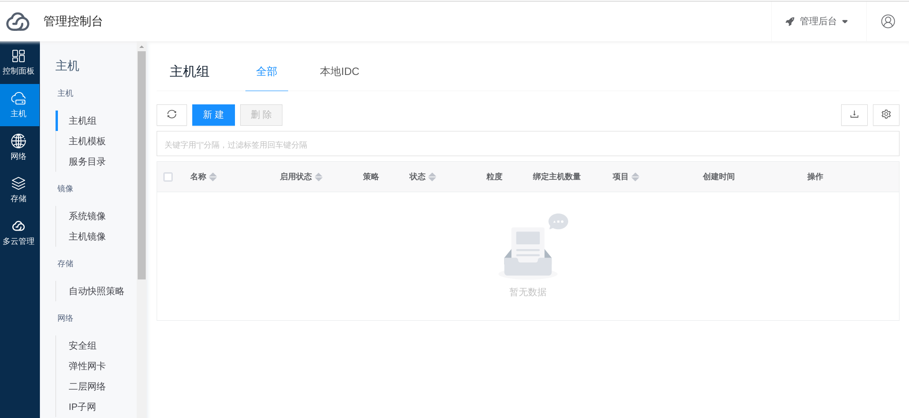
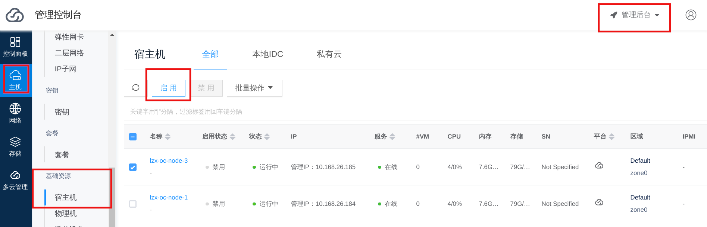

All in One 安装
前提
注意
本章内容是通过部署工具快速搭建 OneCloud 服务，如果想了解部署的细节或者部署高可用环境请参考: 安装部署 。环境准备
OneCloud 相关的组件运行在 kubernetes 之上。
服务器配置要求
- 操作系统: Centos 7.6
- 最低配置要求: CPU 4核, 内存 8G, 存储 100G
以下为待部署机器的环境:
| IP | 登录用户 | 操作系统 |
|---|---|---|
| 10.168.26.216 | root | Centos 7.6 |
提示
10.168.26.216 是本次测试环境 ip，请根据自己的环境做相应修改。
OneCloud相关软件依赖
- 数据库: mariadb Ver 15.1 Distrib 5.5.56-MariaDB
- docker: ce-19.03.9
- kubernetes: v1.15.8
本地环境配置要求
本地环境即用户进行实际操作部署的环境。本次测试的本地环境为MAC操作系统的笔记本，也可在待部署机器上进行操作。
- ssh: 开启 ssh 免密登录
- 本地环境安装部署 ansbile，Windows操作系统不支持安装 ansible
配置 ssh 免密登录
# 生成本机的 ssh 秘钥 (如果本地已有 ~/.ssh/id_rsa.pub 则跳过此步骤)
$ ssh-keygen
# 将生成的 ~/.ssh/id_rsa.pub 公钥拷贝到待部署机器
$ ssh-copy-id -i ~/.ssh/id_rsa.pub root@10.168.26.216
# 尝试免密登录待部署机器，应该不需要输入登录密码即可拿到部署机器的 hostname
$ ssh root@10.168.26.216 "hostname"
开始部署
部署的工具是 https://github.com/yunionio/ocboot , 然后根据需要部署机器的配置， 利用 ansbile 远程登录到待部署的机器安装配置 onecloud 服务，以下操作都在本地环境上进行操作。操作步骤如下:
下载 ocboot
# 本地安装 ansible
$ pip install ansible
# 下载 ocboot 工具到本地
$ git clone -b release/3.3 https://github.com/yunionio/ocboot && cd ./ocboot
编写部署配置
# 编写 config-allinone.yml 文件
$ cat <<EOF >./config-allinone.yml
# mariadb_node 表示需要部署 mariadb 服务的节点
mariadb_node:
# 待部署节点 ip
hostname: 10.168.26.216
# 待部署节点登录用户
user: root
# mariadb 的用户
db_user: root
# mariadb 用户密码
db_password: your-sql-password
# primary_master_node 表示运行 k8s 和 onecloud 服务的节点
primary_master_node:
hostname: 10.168.26.216
user: root
# 数据库连接地址
db_host: 10.168.26.216
# 数据库用户
db_user: root
# 数据库密码
db_password: your-sql-password
# k8s 控制节点的 ip
controlplane_host: 10.168.26.216
# k8s 控制节点的端口
controlplane_port: "6443"
# onecloud 登录用户
onecloud_user: admin
# onecloud 登录用户密码
onecloud_user_password: admin@123
# 该节点作为 OneCloud 私有云计算节点
as_host: true
EOF
开始部署
当填写完 config-allinone.yml 部署配置文件后，便可以执行 ocboot 里面的 ./run.py ./config-allinone.yml 部署集群了。
# 开始部署
$ ./run.py ./config-allinone.yml
....
# 部署完成后会有如下输出，表示运行成功
# 浏览器打开 https://10.168.26.216
# 使用 admin/admin@123 用户密码登录就能访问前端界面
Initialized successfully!
Web page: https://10.168.26.216
User: admin
Password: admin@123
然后用浏览器访问 https://10.168.26.216 ，用户名输入 admin，密码输入 admin@123 就会进入 OneCloud 的界面。

FAQ
1. 在 All in One 中找不到虚拟机界面？
All in One 部署的节点会部署 OneCloud host 计算服务，作为宿主机，具有创建和管理私有云虚拟机的能力。没有虚拟机界面应该是 OneCloud 环境中没有启用宿主机。
请到 管理后台 界面，点击 主机/基础资源/宿主机 查看宿主机列表，启用相应的宿主机，刷新界面就会出现虚拟机界面。
注意
如果要使用 OneCloud 私有云虚拟机，需要宿主机使用 OneCloud 编译的内核，可使用以下命令查看宿主机是否使用 OneCloud 内核(包含 yn 关键字)。
# 查看是否使用 yn 内核
$ uname -a | grep yn
Linux office-controller 3.10.0-1062.4.3.el7.yn20191203.x86_64
# 如果内核不是带有 yn 关键字的版本，可能是第一次使用 ocboot 安装，重启即可进入 yn 内核
$ reboot

2. 如何导入公有云或者其它私有云平台资源？
在 多云管理 菜单，选择 云账号 并新建，根据自己的需求填写对应云平台的认证信息，配置完云账号后 OneCloud 服务就会同步相应云平台的资源，同步完成后即可在前端查看。

3. 其它问题？
其它问题欢迎在 OneCloud github issues 界面提交: https://github.com/yunionio/onecloud/issues , 我们会尽快回复。
Feedback
Was this page helpful?
Glad to hear it! Please tell us how we can improve.
Sorry to hear that. Please tell us how we can improve.